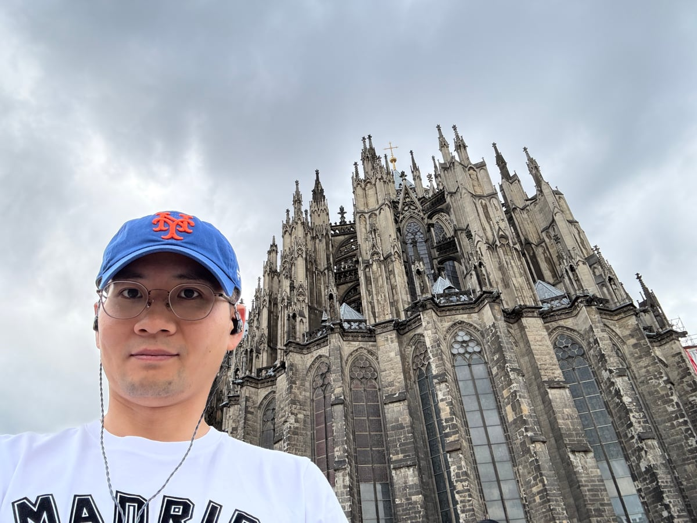

Cue Hyunkyu Lee
University of Pittsburgh · Department of Psychiatry
I am an Assistant Professor of Psychiatry.
I serve as Director of Statistical Genetics in Psychiatry.
I develop statistical methods to investigate relationships among human complex diseases and traits, with a particular focus on psychiatric traits.
My research combines electronic health records (EHRs) with quantitative genetics. My current efforts use deep neural network models to address challenges in quantitative genetics, including multi-trait and cross-ancestry analyses, with particular attention to understanding and accounting for confounding and environmental contributions.

Current opportunity
Postdoctoral position in Statistical Genetics
I am seeking a postdoctoral researcher in Statistical Genetics to work on methods connecting EHRs and quantitative genetics, including deep learning, multi-trait and cross-ancestry analyses, and psychiatric traits.
Please see my publications or curriculum vitae (PDF) for previous work, and contact me to discuss the opportunity.